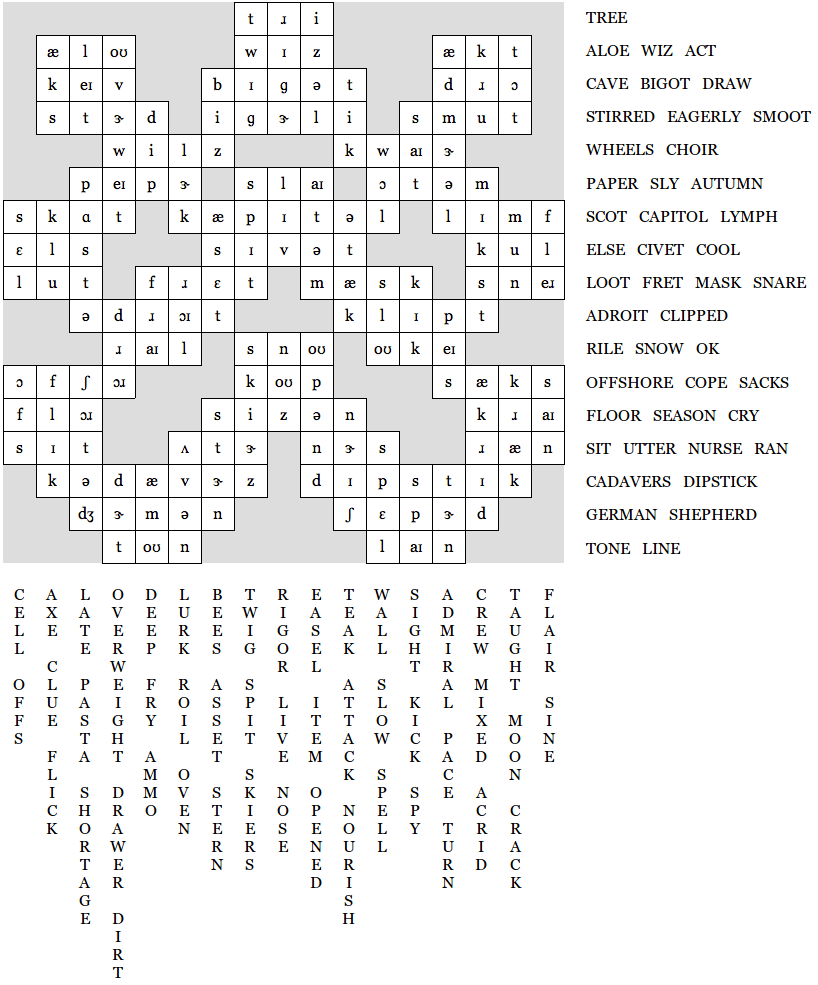

Author: Quinn Mahoney
'Well, I never heard it before,' said the Mock Turtle; 'but it sounds uncommon nonsense.'
This is a diagramless crossword puzzle using broad phonetic transcription. The solution grid below is written in IPA. The two blank clues, 79- and 80-Across, form the answer, which is GERMAN SHEPHERD.
| Across | Down | |||||
|---|---|---|---|---|---|---|
| 1. | Small part of a forest | TREE | 1. | Small part of a 1-Across | TWIG | |
| 4. | Lotion ingredient | ALOE | 2. | Inflexibility | RIGOR | |
| 7. | Expert | WIZ | 3. | Artist's stand | EASEL | |
| 8. | A play part or play a part | ACT | 4. | Gimli's weapon | AXE | |
| 11. | Spelunker's milieu | CAVE | 5. | Behind schedule | LATE | |
| 12. | Racist | BIGOT | 6. | Fat | OVERWEIGHT | |
| 14. | Tie | DRAW | 8. | Naval rank | ADMIRAL | |
| 15. | Roused | STIRRED | 9. | Ship staff | CREW | |
| 17. | With enthusiasm | EAGERLY | 10. | Instructed | TAUGHT | |
| 18. | A unit of measure | SMOOT | 12. | Insects with a queen | BEES | |
| 19. | On a bus, these go 'round and 'round, 'round and 'round | WHEELS | 13. | Type of 1-Across | TEAK | |
| 21. | Group of singers | CHOIR | 16. | Profound | DEEP | |
| 23. | Report | PAPER | 18. | A sense | SIGHT | |
| 24. | Wily | SLY | 20. | Read without comment? | LURK | |
| 27. | Fall | AUTUMN | 22. | Facebook feature | WALL | |
| 29. | Frederick Thomas Pilkington was one. No, I don't know who he was either. Just type it into Google, alright? | SCOT | 23. | Italian dish | PASTA | |
| 31. | A building in Washington | CAPITOL | 24. | Part of a rotisserie | SPIT | |
| 34. | A precious bodily fluid | LYMPH | 25. | Don't die! | LIVE | |
| 37. | C conditional | ELSE | 26. | Single word for a couple | ITEM | |
| 38. | Animal used to make kopi luwak | CIVET | 28. | Type of bag? | MIXED | |
| 39. | Calm | COOL | 29. | Basic structural unit of life | CELL | |
| 40. | Spoils | LOOT | 30. | A board game | CLUE | |
| 41. | Worry | FRET | 32. | A positive thing for the bottom-line | ASSET | |
| 43. | Disguise | MASK | 33. | Assault | ATTACK | |
| 46. | Trap | SNARE | 35. | Natural satellite | MOON | |
| 47. | Clever or skillful | ADROIT | 36. | Fifteen pieces of this is the minimum | FLAIR | |
| 49. | Pruned | CLIPPED | 41. | Billy West character | FRY | |
| 51. | Provoke | RILE | 42. | Flow turbulently | ROIL | |
| 52. | Type of precipitation | SNOW | 44. | Behind schedule | SLOW | |
| 55. | Common computer button | OK | 45. | Punt | KICK | |
| 56. | Asea | OFFSHORE | 48. | Piece of a piece of furniture | DRAWER | |
| 59. | Handle | COPE | 50. | Rate | PACE | |
| 60. | Lets go in London? | SACKS | 52. | Athletes on 52-Across | SKIERS | |
| 64. | Amaze | FLOOR | 53. | Bouquet | NOSE | |
| 65. | 27-Across is one | SEASON | 54. | Unwrapped | OPENED | |
| 67. | Blubber | CRY | 56. | Kills | OFFS | |
| 68. | Rest | SIT | 57. | Film | FLICK | |
| 69. | Speak | UTTER | 58. | Lack | SHORTAGE | |
| 70. | Medical professional | NURSE | 61. | Bitter | ACRID | |
| 72. | Moved swiftly | RAN | 62. | Open slightly | CRACK | |
| 73. | Bodies | CADAVERS | 63. | Common function | SINE | |
| 76. | Device for measuring liquids | DIPSTICK | 65. | Serious | STERN | |
| 79 & 80. | GERMAN SHEPHERD | 66. | Feed | NOURISH | ||
| 81. | It might come before your name and number | TONE | 69. | Baker's need | OVEN | |
| 82. | Type of dance | LINE | 71. | What you won't do when solving this puzzle | SPELL | |
| 74. | Soil | DIRT | ||||
| 75. | Hunter's need | AMMO | ||||
| 77. | There's a black one and a white one, and they're usually trying to kill each other | SPY | ||||
| 78. | Go sour, like milk | TURN | ||||